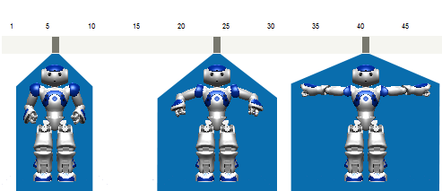
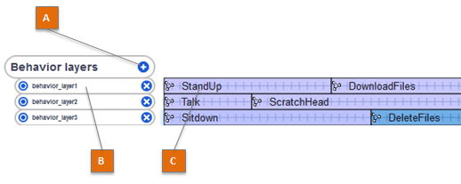
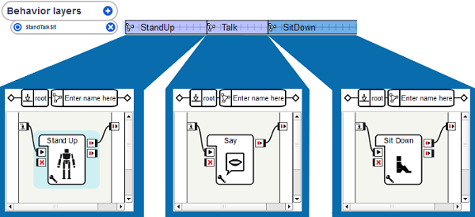
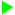
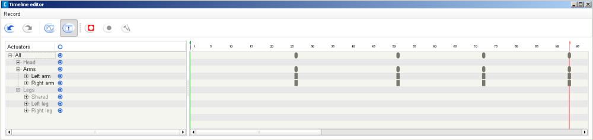
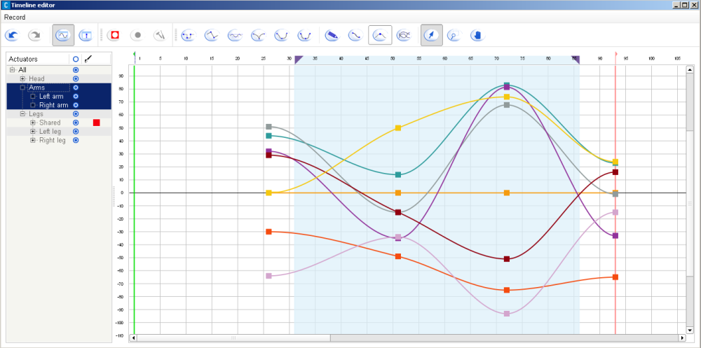
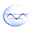

Timeline box¶
How to create a Timeline box¶
To create a Timeline box, you can:
- Drag and drop the Templates > Animation box from the default box library, or
- Create it from scratch:
| Step | Action |
|---|---|
Right-click on the Flow diagram wherever you want to create the box and choose Add a new Box. The Create a new box menu is displayed. 
|
|
| Add a Name and a Tooltip for your box. | |
| Optional: set the picture to recognize it among other boxes in your diagram. | |
Optional: set parameters, inputs and outputs that can be manipulated by the box. For further details about parameters, see How to add/remove inputs, outputs, parameters in a box section. |
|
| In the box type part, select Timeline. | |
Click the Ok button. The created Timeline box is displayed on the Flow diagram. |
|
Double click on your box, to get into and edit the inner Timelime. 
|
Timeline panel¶
| Part | Name | Description | For further details, see ... |
|---|---|---|---|
| A | Motion | Allows you to define Motion Keyframes to be executed following the Timeline. Edit button displays the Timeline Editor. Play motion button plays the Motion layer of the Timeline. |
Timeline Editor |
| B | Time ruler | Represents the time elapsing when the box is started. Frame ruler: the upper white part of the Timeline displays the Frame numbers. It allows you to set the Start and End frames. Motion layer: the grey part of the Timeline displays the Motion Keyframes. It allows you to create and edit Motion Keyframes. |
|
| C | Behavior layers | Allows you to define Behavior layers to be executed in parallel with Motion Keyframes. Add button allows you to add one or more Behavior layers. |
Behavior layers |
| D | Edit button | Allows you to set the parameters of the Timeline. | Timeline options |
| E | Frame number | Displays the number of the selected Frame. |
What is a Timeline¶
A Timeline enables you to easily synchronize boxes with movements, movements with each other and/or Boxes with each other.
A Timeline is constituted by:
- a Motion layer which contains movements.
- Optionally one or several Behavior layers which contain Flow diagrams NAO will execute in addition to its movements.
Timeline execution¶
The whole Timeline is based on a time ruler. The time is represented on the Timeline by numbered Frames. Each Frame corresponds to a position of the robot and/or Flow diagrams to execute.
When a Timeline is started, the Time cursor is placed on the Start frame. Then it is regularly incremented to the next Frame, until it gets to the End frame.
The speed to move from a Frame to another is defined by the Frame rate of the Timeline. For further details, see Timeline options.
Note
The automatic process regularly moving the Time cursor to the next Frame can be affected (stopped, restarted, moved to another Frame) by the sub-boxes and the script of the box. For example, the Goto And Stop boxes move the cursor to a specific frame and pause the cursor so that it will not move to the next frame.
Frame ruler¶

| Part | Name | Represented by ... |
|---|---|---|
| A | Frames | scale of numbers. |
| B | Start frame | a green flag. |
| C | End frame | a red flag. |
| D | Time cursor | a red line, appearing only when the Timeline is executed. |
Frames¶
When the Time cursor gets to a Frame, simultaneously:
- the joint values stored to this Frame are applied to the robot.
- the Flow diagram of each Behavior keyframe placed on this Frame are loaded (if they have not been loaded yet).
Start frame¶
The Start frame is a specific Frames.
When the Timeline is started, the Time cursor is directly placed at this Frame.
Any Frame which is before the Start frame will not be reached.
If you force the Time cursor to move on one of those Frames (with a Goto And Play box for example), this will have the same result as going to the End frame.
End frame¶
The End frame is a specific Frames.
As soon as the Time cursor gets to this Frame:
- The Time cursor is paused. So it stops being incremented.
- If there is any onStopped output:
Any Frame which is after the End frame will not be reached.
If you force the Time cursor to move on one of those Frames (with a Goto And Play box for example), this will have the same result as going to the End frame.
How to set Start and End frames¶
By default, Start frame is set to the Frame 0 and End frame is set just before the last Motion frame defined.
To move Start frame or End frame:
- Drag them on the ruler or
- Right-click on a Frame number and choose Set start frame here or Set end frame here.
To reset them to the default value:
- Right-click on a Frame number and choose Reset start here or Reset end here.
Time cursor¶
The Time cursor represents the currently executed Frame in the Timeline.
Value of the Time cursor¶
For a Timeline box, the value of the Time cursor:
- is the number of the executed Frame, or
- is equal to -1 when its Timeline has not been started or has been stopped.
For a Flow diagram box, its value is systematically equal to -1.
A Script box has no Time cursor.
How to get the value of the Time cursor¶
You can access to the value of the Time cursor of a Timeline box from its Script with the following command:
timeCursor = ALMemory.getData( self.id )
You can also access to it from the script of a child box with the following command:
timeCursor = ALMemory.getData( self.parentId )
Warning
A Script box has no Time cursor. So if you try to call the first command above in a script box, it will return an error.
Motion layer¶
The Motion layer is where NAO’s movements are stored in the Timeline.
Each Motion keyframe on the Motion layer corresponds to a position of the robot or a part of its body.
Note
As there are several joints stored in this Motion layer, we can say it is made with several sub-motion layers, each of them corresponding to a joint. They are the sub-layers you can see when opening the Timeline Editor.
Motion keyframe¶
A Motion keyframe represents a position of the robot or a part of its body.
It contains the angle values of the stored joints.
When the Time cursor gets to a Motion keyframe, the joint values stored to this frame are applied to the robot.
Interpolation¶
The Motion layer contains Motion keyframe representing specific positions set by the person who made the movement.
Then an interpolation of joint values is automatically made in order to obtain intermediate positions between two Motion keyframes.
Note
You can choose the type of interpolation between the Motion keyframe in the Timeline Editor.
Editing Motion keyframes¶
Motion keyframes can be created and modified directly on the Motion ruler or using the Timeline Editor.
Motion ruler¶

| Part | Name | Description |
|---|---|---|
| A | Motion keyframe | Each Motion keyframe is represented by a dark grey rectangle. |
| B | Actuator values | If you keep the mouse on a Motion keyframe, a tooltip appears with the values of stored joints. |
| C | Selected Motion keyframe | A Motion keyframe gets orange when it is selected. Drag a selection rectangle to select several Motion keyframes, or Ctrl-Click them. |
| D | Selected range of frames | The range of frames is an alternative mode of selecting Motion keyframes. Drag the Frame numbers to create it. |
| E | Insertion point | Represented by a blue line, the insertion point allows to create or to paste Motion keyframes. |
Creating¶
To insert a new Motion keyframe with the robot’s current position:
Right-click a frame in the grey Timeline and choose Store joints in keyframe.
Choose the joints you want to store the value of (Whole body, Head, Arms or Legs).
A dark grey rectangle appears.
Selecting¶
To select:
a Motion keyframe, simply click on it.
The robot will automatically take the position corresponding to this Motion keyframe.
several Motion keyframes, drag and drop in the grey Timeline.
all Motion keyframes, right-click the grey Timeline and choose Selection > Select all.
Note
The option Select from layer is only useful in the Timeline Editor.
Removing¶
To remove the values of some joints from any Motion keyframe:
- Select one or several Motion keyframe.
- Right-click it and choose Remove joints from keyframe.
- Choose the joints you want to remove (Whole body, Head, Arms or Legs).
Moving¶
To move Motion keyframes within the Timeline:
- Select one or several Motion keyframe.
- Drag them.
or
- Select one or several Motion keyframe.
- Right-click it and choose Copy or Cut.
- Click on the Timeline in order to place the insertion point (see Motion ruler).
- Right-click it and choose Paste.
Note
If the Keyframe you have pasted is empty, this could mean that there is a conflict with contradictory values for the same joint at this frame.
Mirroring¶
The values of left and right joints can be swapped using the Mirror option in the contextual menu. Then you can select where to apply the swap (Whole timeline, Selected frames, Selected keys).
For example if the robot moves his right arm during the whole Timeline and you mirror it, then it will move his left arm from now on instead.
Spreading / tightening¶
to change the gap between Motion keyframes:
Select a range of frames by dragging the Frame numbers.
The selected range of frames is represented by a blue square surrounded by purple triangles.
Drag the right purple triangle to resize the selected chunk of motion layer.
Note that the left purple triangle allows you to move the selected chunk of motion layer.
Note
Since a chunk of motion layer may contain Motion keyframes, they are moved as the selection is moved. They also adapt themselves to the new size of the selection. As the size of the selection grows, the duration between Motion keyframes grows too.
Exporting C++ / Python¶
To export an animation to C++ or Python code:
Select one or several Motion keyframes.
Right-click them and select Export motion to clipboard.
Select a language (C++ or Python) and a mode (bezier or simplified).
Paste it in your code.
The robot will make the same movements when this code is executed.
Behavior layers¶
Behavior layers area allows you to add Behavior layer(s) to the Timeline, which basically represent what NAO is going to do in addition to his movements.
| Part | Name | Description |
|---|---|---|
| A | Add button | Allows you to add one or more Behavior layers |
| B | Behavior layer | Click the Activation button to enable or disable a Behavior layer:
Click the name of a Behavior layer, to edit it. Click the Delete button to delete the Behavior layer. |
| C | Behavior keyframe | Each Behavior layer can run one or several Behavior keyframes sequentially. |
Behavior layer¶
A Behavior layer is constituted by Behavior keyframes, sequentially organized.
Creating more than one Behavior layer allows to get two Behavior keyframes active at the same time i.e. synchronize two Flow diagrams.
Behavior keyframe¶
A Behavior keyframe is a Flow diagram which is applied on a range of Frames of the Timeline.
Behavior keyframe execution¶
As soon as the Time cursor gets within this range of Frames, the Flow diagram of the Behavior keyframe is loaded.
As soon as the Time cursor gets out of the range of Frames of the Behavior keyframe, its Flow diagram is unloaded.
Adding¶
To insert a new Behavior keyframe in a Behavior layer:
- Right-click the Frame you want to insert the Behavior keyframe to and choose Insert KeyFrame.
- Double-click on the Behavior keyframe.
- Set its name, its start frame in the index field, and its image.
Selecting¶
To select:
- a Behavior keyframe, simply click it.
- several Behavior keyframes, Drag a selection rectangle around them.
- all Behavior keyframes from a Behavior layer, right-click the concerned Behavior layer area and choose Selection > Select from layer.
- all Behavior keyframes, right-click the Behavior layers area and choose Selection > Select all.
Editing¶
To move Behavior keyframes within the Behavior layer, simply drag them.
They can also be cut, copied, pasted and deleted through the contextual menu.
Timeline options¶
The Edit button of a Timeline allows you to set the following Timeline parameters:
| Name | Description |
|---|---|
| FPS | Stand for Frame Per Second.
Sets the execution speed of the Timeline.
|
| Size | Size of the Timeline in number of frames. |
| Resources Acquisition | Allows you to manage conflicts between commands sent to the same joint. You can choose several modes:
Warning The Resources Acquisition setting should not be used anymore as an improved solution has been provided which enables you to set the resources used by each box and some more settings. We recommend you to update your older behaviors and set the resources of the boxes of your behaviors. To do so, see the section How to set resources in a box. |
Timeline Editor¶
The Timeline Editor has two edition modes:
In both modes, there are toolbars available on the top of the window.
The first toolbar is displayed as follows:
Here are the actions you can make with this toolbar:
| Button(s) | Function |
|---|---|
The classical undo and redo buttons. Warning These buttons does not affect only the timeline. They affect most of the actions you made in the behavior, even those which were out of the Timeline Editor. |
|

|
These buttons enables you to select the edition mode:
The second mode is selected by default. |

|
Activates or deactivate the recording mode. |


|
Starts or stops the motion recording. Automatically activates the animation mode. This button is only enabled when the recording mode is activated. A recording can also stop by itself when it reaches the last frame. The recording will be done in the current range selection, or, if there is no such selection, between the start and the end frame of current timeline. |

|
Edit the recording settings. |
The recording settings are presented as below:

The available settings are:
Mode: The way you record joint positions. You can choose between:
- Periodic: positions of the recorded joints are regularly stored.
- Interactive with bumpers: positions of the recorded joints are stored each time you press the left foot bumper. Pressing on the right foot bumper sets the stiffness of the recorded joints.
- Interactive with chest button: positions of the recorded joints are stored each time you press the torso button or you say “store position”. NAO’s ear LEDs flash when he understands “store position”.
Time step: time elapsing between two stored keyframes. Indeed whatever the way you record joint positions, the keyframes created at each storage will be the same time step apart.
Allow timeline extension:
If this option is unchecked, the recording will automatically stop when the end frame is encountered.
If it is checked, the recording will continue as long as the user did not press the Stop button.
In that case, the timeline contents after what was supposed to be the last frame will be “pushed” at the end of the recording.
To know how to use the recording settings refer to the tutorial: Creating a movement using the recording mode.
Whenever the recording mode is active, two additional columns appear in the table of the joints:
| Column | Description |
|---|---|
| If this option is activated, all the children joints of this joint will be recorded. | |
|  | If this option is activated, all the children joints of this joint will be played during the recording. |
In both mode, you can see the list of joints and groups of joints. For example the group Legs contains the group Left leg which contains the group Left ankle which contains the joints LAnklePitch and LAnkleRoll.
To expand a group of joints, click on the + button next to its name. To unexpand it, click on the - button next to its name.
You can select a joint or a group of joints by simply clicking on it.
You can enable or disable a joint or a group of joints by clicking on the blue round on the right of its name:

|
The joint or the group of joints is disabled. It will not be loaded nor executed. |
|---|---|
| The joint or the group of joints is enabled. |
Timeline Editor: Worksheet¶
The default motion recording mode is the Worksheet mode.
In this mode you see the motion keyframes of each joint and each group of joints.
Each joint and group of joints and its corresponding motion keyframes are on the same line.
Each motion keyframe that belong to a group of joints is represented by a grey rectangle when the group is not expanded and by a grey oval when it is expanded.
Motion keyframe that belong to a joint is represented by a grey rectangle.
All the keyframes are placed along an horizontal axis that indicates the frame number as in the Timeline panel.
You have the same options on motion keyframes as in the Timeline panel. And the rectangles representing motion keyframes get the same way orange when they are selected. A rectangle or an oval representing motion keyframes for a group of joints can have an intermediate greyish orange color, when only a part of their child keyframes is selected.
Moreover, you can use the option Selection > Select from layer of the right-click menu to select all motion keyframes for a joint or a group of joint.
Timeline Editor: Curves¶
The second motion recording mode is the Curves mode. In this mode you see only the motion keyframes corresponding to the selected joints.
Each joint is represented by a curve in a different colour. You can choose the colour of each joint in the column with the following paintbrush button:
Each keyframe is placed along the horizontal axis as in the Worksheet mode. But it is also placed along the vertical axis which represents the angle value of the joint.
In the Curves mode, you can move, cut, copy and paste motion keyframes.
When this mode is activated, several buttons are added in the toolbar:
The first six buttons are used to set interpolation modes for each keyframe.
Each keyframe are linked with the previous and the next keyframe with interpolated curves.
The interpolation modes of the left and right curves of a keyframe can be adjusted.
Changing the interpolation modes will not affect the position of the key so the value and the frame will remain unchanged.
It will affect the shape of the curves depending on which interpolation mode is chosen.
Clicking on one of these buttons will set the interpolation mode for both right and left curves of the key.
Here is all the interpolation modes:
| Constant: the value of the key is applied to the actuator up to the next keyframe. This won’t give smooth movements on the robot, but it can be used to implement “robotic movement” effects. | |

|
Linear: the value is interpolated linearly toward the next key. |
|  | Automatic bezier: a Bezier curve interpolation is used, but the curve parameters are computed automatically by Choregraphe to give smooth and good looking movements. This is the default mode for new keyframes. In that mode, contrary to all other Bezier mode, the tangents of the curve at the key are not displayed by default. They can be shown by checking the “Show tangents” button (described below). Automatic tangents, when visible, are not editable, and are displayed in blue rather than black to distinguish them easily. |
| Bezier: this mode (and the following two) also implements a bezier interpolation, but here the curve parameters are now adjustable by the user. Two tangent handles will appear next to the key to control the curve slope. | |

|
Smooth: this is a Bezier mode too, but with an additional constraint, the two tangents of the key (on the left and on the right) must be aligned. Note however that if a key is only smooth on one of its side, the constraint won’t be enforced. |
| Symmetrical: this is similar to the Smooth mode, with another constraint: the length of the two key tangents have relative sizes, so moving one not only keep the other aligned but also moves it horizontally to have an even smoother movement. Like the Smooth mode, the symmetry constraint will only be applied if both tangents are flagged symmetrical. |
The functions of the next buttons are gathered in the following table:

|
Displays the Curve key edit that is used to set key value and left and right interpolation modes. |

|
Reduce the number of keyframes in the curves and still keep a similar motion. |
| When this button is checked, the automatic tangents of the curve that are not editable are displayed in the curve view. It is useful to mix automatic keyframes with manually adjusted ones. | |
| When this button is checked, you are in the selection mode. Drawing a rectangle with a left mouse click will select a group of keys. | |
| When this button is checked, you are in the zoom area selection mode. Drawing a rectangle with a left mouse click will zoom the view so that it fits that rectangle. | |

|
When this button is checked, you are in the viewport drag mode. In that mode, the mouse cursor becomes a hand. Dragging the cursor while pressing the left mouse button will scroll the view. |